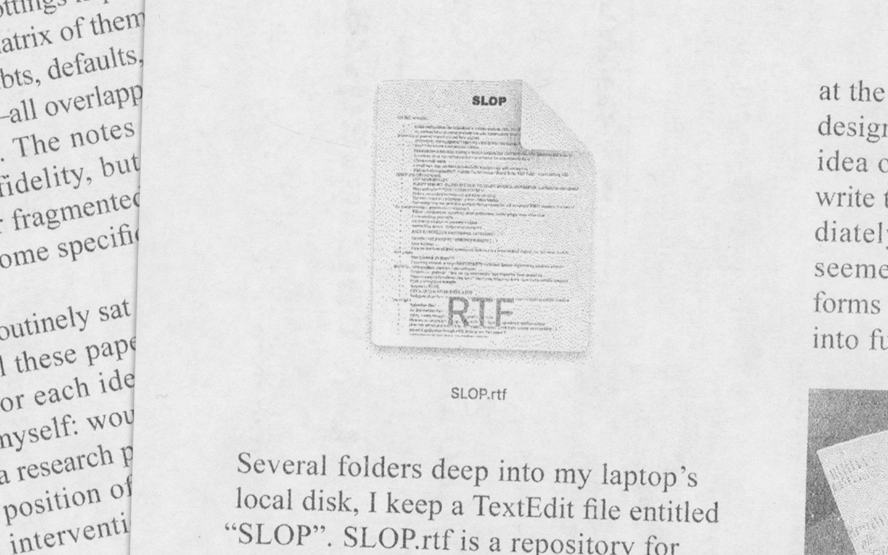

Hi everyone, my name is Shravani Bagawde and my thesis is entitled “Notes on Verbalizing…”. I figured I’d start by talking about a place I have become extremely acquainted with in these past few years: a textEdit file on my laptop lovingly called SLOP.

A risograph detail of a MacOS RTF file icon
SLOP has become a repository for every inkling of a project that has come to me these past few years. When we began this semester, I frequently consulted the file in hopes of finding some viable direction for my thesis, translating its ideas on 11 by 17 sheets of copy paper that were folded into fourths.
Hand-written notes produced while "ideating" for my thesis
These ideas were almost always rooted in some sort of verbose research topic, like internet infrastructure or neoliberal digitality. To me, design was ultimately an avenue for the research and writing I was more eager to do.
I would scan each of these ideas and ask myself: wouldn’t these just be better off as essays? Does every exploration really need a designed intervention?
My comfortable thesis would have been something analytical with a clear framework, and fluidly typeset once I was all done --a practice I was fairly confident with. For example, when we were asked to make a book out of 256 images as our first assignment, I took it as an opportunity to finalize and publish a paper I had written about WhatsApp image sharing cultures. Using this book as the perfect model, I proceeded with this idea.
Flipping through Good Morning! Or The Phatic Hypersublime of SMS Graphics (Open Project)
When I finally sat down to write the critical essays that would form the backbone of my thesis, I almost immediately hit a wall. Ideas that once seemed so generative in their clipped forms suddenly seemed dubious and difficult to expand into fully-fledged texts. Put simply, I didn’t know what to write.
A risograph detail of a text fragment reading, "I don't know how to not write. But I also don't know what to write."
With nowhere else to go, I decided to investigate this very feeling and interrogate what exactly it is to doubt.
A detail from my notebook, reading "How can I stop being paralyzed w/ doubt & overanalysis @ every stage?
I tried to gather as many answers to this question, by examining my own notes, other texts, asking people around me, and I began documenting these theories in a set of threaded web pages.
Some described doubt as a kind of perpetual swelling:
Some saw it as something conspiratorial:
And some described it as a willingness to change:
This project is called ✼ Querying… and over time, it became a sort of futile search engine one that would only answer a single question and then trap you into a series of uncertain answers.
I was fascinated by these small instances of instability, and figuring out how they could be visually represented.
User-uploaded Google Maps views proved to be a great interface to capture and appropriate these moments. Documentation mishaps would result in phantom-like insertions of these users’ bodies. I kept collecting these locations in a spreadsheet, recording them to create ✼ Glitching…, a montage dedicated to archiving the accidental and erroneous.